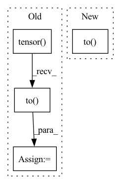

Pattern ID :37872

Before Change
// transformer for multiple pid types to total of three classes
device = prediction.device
pid_transform = {1:0, 12:2, 13:1, 14:2, 16:2}
target_new = one_hot(torch.tensor([pid_transform[np.abs(int(value))] for value in target]), 3).to(device)
return cross_entropy(
prediction.float(), target_new.float(), reduction="none"
)
After Change
def _forward(self, prediction: Tensor, target: Tensor) -> Tensor:
device = prediction.device
target_new = one_hot(target).to(device)
return cross_entropy(
prediction.float(), target_new.float(), reduction="none"
)
In pattern: SUPERPATTERN
Frequency: 4
Non-data size: 4
Instances
Fragment ID: 108603097
Project Name: icecube/graphnet
Commit Name: 802e38ec261867832403f36d1dc53d8c564f73af
Time: 2022-10-31
Author: qgf305@hep02.cluster
File Name: src/graphnet/training/loss_functions.py
M Class Name: CrossEntropyLoss
N Class Name: CrossEntropyLoss
M Method Name: _forward(3)
N Method Name: _forward(3)
M Parent Class: LossFunction
N Parent Class: LossFunction
M File Name: src/graphnet/training/loss_functions.py
N File Name: src/graphnet/training/loss_functions.py
M Start Line: 124
M End Line: 126
N Start Line: 128
N End Line: 129
'>
Before Change
gan_dataloader = self.dataset.get_dataloader(
mode="train", dataset=gan_dataset, batch_size=self.dataset.batch_size, num_workers=0)
for i, (data, label) in enumerate(gan_dataloader):
data = torch.tensor(data)
gan_data = data.to(env["device"])
self.wgan.train(gan_data)
source_encode = self.wgan.get_encode_value(source_imgs, self.poison_num).detach()
target_encode = self.wgan.get_encode_value(target_imgs, self.poison_num).detach()
After Change
poison_label = self.target_class * torch.ones(len(target_imgs), dtype=torch.long, device=target_imgs.device)
poison_imgs, _ = self.model.remove_misclassify(data=(target_imgs, poison_label))
poison_imgs= torch.rand(poison_imgs.size()).to(target_imgs.device)
poison_imgs, _ = self.pgd.craft_example(_input=poison_imgs)
poison_imgs = self.add_mark(poison_imgs).cpu()
poison_label = [self.target_class] * len(target_imgs)
'>
Fragment ID: 108603099
Project Name: ain-soph/trojanzoo
Commit Name: 29ef13a4f7b41cb83bda18e549dfbb3755254244
Time: 2020-08-31
Author: corazju@zju.edu.cn
File Name: trojanzoo/attack/backdoor/clean_label.py
M Class Name: Clean_Label
N Class Name: Clean_Label
M Method Name: attack(3)
N Method Name: attack(3)
M Parent Class: BadNet
N Parent Class: BadNet
M File Name: trojanzoo/attack/backdoor/clean_label.py
N File Name: trojanzoo/attack/backdoor/clean_label.py
M Start Line: 83
M End Line: 132
N Start Line: 84
N End Line: 139
'>
Before Change
:return: [B, T, C] or [L, B, T, C]
if isinstance(lengths, list):
lengths = torch.tensor(lengths).to(x.device)
if padding_mask is None:
padding_mask = make_pad_mask(lengths)
// padding_mask = x.abs().sum(-1).eq(0).data if padding_mask is None else padding_mask
After Change
:return: [B, T, C] or [L, B, T, C]
if padding_mask is None:
padding_mask = make_pad_mask(lengths).to(x.device)
// padding_mask = x.abs().sum(-1).eq(0).data if padding_mask is None else padding_mask
nonpadding_mask_TB = (
1 - padding_mask.transpose(0, 1).float()[:, :, None]
'>
Fragment ID: 108603100
Project Name: r9y9/nnsvs
Commit Name: 92401f8527d723eec231b1e4c938edd0bb87193b
Time: 2022-11-20
Author: zryuichi@gmail.com
File Name: nnsvs/diffsinger/fs2.py
M Class Name: FFTBlocks
N Class Name: FFTBlocks
M Method Name: forward(4)
N Method Name: forward(4)
M Parent Class: nn.Module
N Parent Class: nn.Module
M File Name: nnsvs/diffsinger/fs2.py
N File Name: nnsvs/diffsinger/fs2.py
M Start Line: 719
M End Line: 722
N Start Line: 720
N End Line: 720